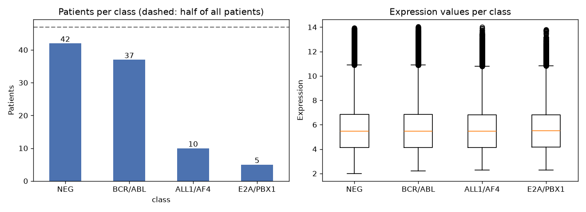
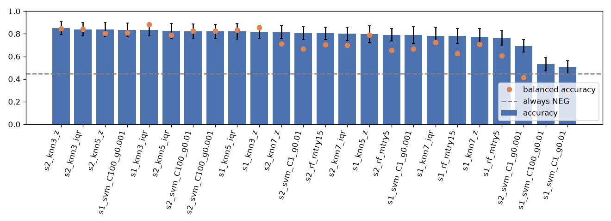
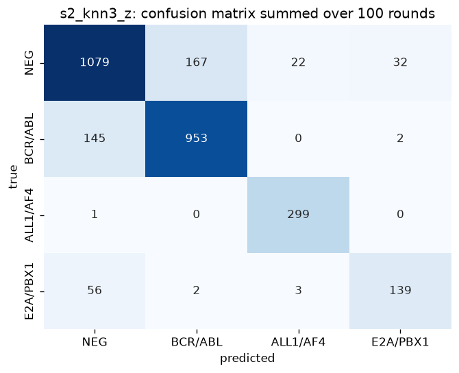
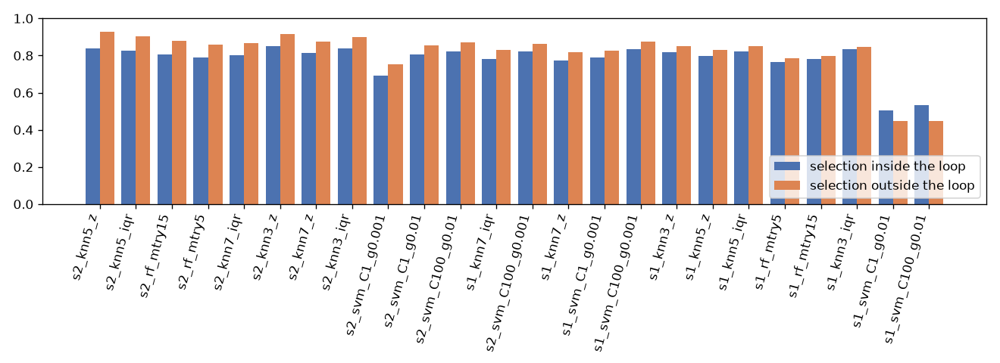

Leukaemia Mining
Can the activity of thousands of genes tell leukaemia subtypes apart? A Python reproduction and extension of a classic microarray case study, with a closer look at how easily such results become too good to be true.
Summary
- Task: name one of four leukaemia classes for patients from gene measurements each.
- Baseline: the best of 24 workflows,
, reaches accuracy. Always answering the biggest class gives . - Two metrics, two winners:
has lower accuracy but the best balanced accuracy () because it recognises the five-patient class. - Extension: choosing genes before splitting the patients raises accuracy by on average and by up to .
- Control: with shuffled labels the honest pipeline's best result is (the always-guess rate), while the leaky one reaches from pure noise.
1. The question: telling subtypes apart from gene activity
Acute lymphoblastic leukaemia (ALL) is a fast-developing blood cancer in which immature white blood cells multiply uncontrollably. It is not a single disease. It comes in subtypes, and each is linked to a different genetic change. The subtype matters because different subtypes behave differently and can call for different treatment. That clinical background is general knowledge rather than something the case study examines.
A laboratory chip called a microarray can measure how active thousands of genes are in a patient's sample, giving one number per gene. The case study's central hypothesis is that each subtype leaves a recognisable pattern in those numbers. If so, a computer should be able to look at the numbers and name the subtype. The interesting part is how reliably this can be shown with only a few dozen patients.
Terms used on this page
| Term | Plain meaning |
|---|---|
| Leukaemia | Cancer of the blood-making system. |
| Lymphoblastic | The runaway cells are immature versions ("blasts") of lymphocytes, white blood cells that fight infection. |
| B-cell | One of two kinds of lymphocyte. This project uses B-cell ALL only. |
| Gene | A stretch of DNA holding the instructions for one protein, like one recipe in a huge cookbook. |
| Gene expression | How strongly a gene is switched on in a cell. A recipe cooked often has high expression. |
| Translocation | Two chromosomes swap pieces. The swap can fuse two genes into a new one and change which genes are busy. |
| Subtype | A named category of the same disease. Here each subtype is named after the genes involved in the swap. |
The four classes
| Class | Meaning |
|---|---|
| BCR/ABL | The genes BCR and ABL are fused by a translocation. |
| ALL1/AF4 | The genes ALL1 and AF4 are fused. |
| E2A/PBX1 | The genes E2A and PBX1 are fused. |
| NEG | "Negative": tests found none of these abnormalities. |
2. The data
The data come from a published study of ALL (Chiaretti et al., 2004), distributed with the Bioconductor project as the ALL package. The case study keeps the B-cell patients whose class is one of the four above. Each patient is a row; each of the gene measurements is a column; one more column holds the class, determined by laboratory tests.
The classes are very uneven. The smallest, E2A/PBX1, has five patients. Always answering NEG would be right for of the patients, so any model has to clearly beat that figure.

Why the small class matters
Five patients are thin evidence. With a 30% hold-out for testing, each round contains only one or two E2A/PBX1 patients, so recall for this class is very coarse in a single round and only meaningful as an average over many rounds. Overall accuracy can also look fine while the class is almost always wrong, because it is only about 5% of the patients. This is why the project reports balanced accuracy and per-class recall next to accuracy.
3. Why this is hard
More columns than rows
There are gene columns for patients. Some genes look predictive purely by luck, and a model can latch onto them: excellent on the patients it studied, poor on new ones. This is overfitting.
Noise and irrelevant genes
Most genes barely change between patients, and some probes on the chip are laboratory controls. They add noise and no information.
Uneven classes
One class has five patients. Accuracy rewards getting the large classes right and hardly notices failure on the small one.
Leakage
If the class labels are used to pick the best genes using all patients, and the model is then tested on those same patients, the test patients have already shaped the choice. The reported accuracy is then too good to be true. Avoiding this is the central methodological point of the case study, and the extension below measures how large the effect is.
4. The original approach
The case study (Torgo, Data Mining with R, Chapter 7) works in the R language. Its focus is feature selection: shrinking thousands of genes to a number a model can handle. The workflow is as follows.
The three classifiers in one line each: a random forest averages many decision trees that each see random subsets of genes; an SVM finds a boundary between classes, here with a curved (RBF) kernel; k-NN stores the training patients and labels a new patient by a vote among the k most similar ones, so it needs genes on a common scale.
The case study compares workflows (18 classifier settings times 3 gene-selection strategies). Its best result is about accuracy, from an SVM on the 30 random-forest genes. No random-forest variant appears in its top ten, and the top ten are not significantly different from one another.
5. The reproduction in Python
The aim is to reproduce the workflow, not the R code, and to compare which setups do well rather than exact decimals. Results will not match the book exactly because the language, the random draws and the library defaults differ.
| Aspect | Book | This project | Why |
|---|---|---|---|
| Workflows | 24: strategies s1 (all ANOVA genes) and s2 (random-forest top 30); the clustering ensemble is not reproduced. Random forest 2 settings, SVM 4, k-NN 6. | Run time, and the aim is the ranking pattern. All three classifiers and both main strategies are covered. | |
| Resampling | Bootstrap, rounds | stratified rounds, of patients held out each time | Keeps class proportions in every test set and gives per-class recall directly. Accuracies are therefore not like for like with the book. |
| Gene ranking | Permutation importance (drop in accuracy) | Impurity importance from scikit-learn | Much faster inside many rounds. It can favour some genes, and the effect on accuracy was not measured. |
| First filter | R, genes | Run in R with the same package, exported, then used in Python: genes; ANOVA keeps (book: ) | The filter relies on a gene-annotation database, and the current version maps more probes. Counts differ slightly. |
| Scaling | Median and IQR for k-NN | z-score for SVM and k-NN; median and IQR as a k-NN variant | Distances and kernels need genes on one scale. Scalers are fitted on training patients only. |
| Measures | Accuracy | Accuracy, balanced accuracy, per-class recall, confusion matrix | Class sizes differ greatly. |
Kept as in the book: the three classifiers, the ANOVA filter inside every round, the 30-gene random-forest strategy, and accuracy as the headline measure. Added beyond the book: the extra measures, the leakage experiment, the shuffled-label check and the cell-stage check described below.
6. Results: 24 workflows, two metrics
Each row is one workflow: a gene-selection strategy (s1 all ANOVA genes, s2 random-forest top 30) followed by a model. Values are means over rounds, with all selection done inside each round. The last four columns give recall for each class. Click a column header to sort. The switch picks which metric is highlighted and sorted. Shift is the rank by accuracy minus the rank by balanced accuracy: a positive value means the workflow looks better when each class counts equally.

What the table shows
- Ranking pattern. k-NN and the better SVM settings lead, and no random-forest workflow is in the top ten: the best,
, ranks with . This matches the book. Mean accuracy by family is for k-NN, for random forest and for SVM; the SVM average is pulled down by two failing settings. - The metric changes the winner.
is first by accuracy (, E2A/PBX1 recall ).is first by balanced accuracy () with E2A/PBX1 recall , but lower accuracy () because it makes more mistakes on NEG. - Accuracy hides the small class.
has accuracy and recognises E2A/PBX1 in of cases. - Two SVMs fail.
() and() predict almost only NEG. The curved kernel compares patients by squared distance; with hundreds of standardised genes that distance is large, so the kernel value with gamma 0.01 is close to zero for every pair, nothing generalises, and the model falls back to the biggest class. The same gamma works with 30 genes. SVMs are sensitive to both gamma and the number of genes. - Differences between top workflows are small. The paired tests flag of the other top-ten workflows as different from the best at the 5% level, unlike the book. The rounds share training patients, so these p-values are optimistic and small gaps should not be treated as established.

7. The leakage experiment: selecting genes inside or outside the loop
The extension changes one thing. In the baseline, the ANOVA filter and the random-forest ranking are fitted on each round's training patients only. In the leaky version, the same selection is fitted once on all patients before the data are split, so every test patient has already influenced which genes are used. The splits, models and seeds are identical, so the two runs can be compared round by round.
Result
- The best workflow rises from (inside) to (outside,
). - Mean gain over the 24 workflows: in accuracy and in balanced accuracy. of workflows score higher outside the loop, and of differ at the 1% level (a test with the same optimism caveat).
- The effect concentrates in strategy s2: on average, against for s1.

Why s2 is hit harder. Picking 30 genes out of several hundred by importance leaves much more room to fit the labels, including the test patients' labels, than keeping every gene that passes a significance test. The more aggressive the selection, the larger the inflation. The exceptions at the bottom of the table are the two failing SVMs, whose scores move with the gene set rather than with any real signal.
8. The sanity check: shuffled labels
A high accuracy proves little unless the pipeline is known not to invent results. In this check the class labels are randomly permuted once, which removes any real link between genes and classes while keeping the class counts, so the always-NEG rate stays . Chance balanced accuracy for four classes is 0.25. Each run uses rounds.
What it proves
- With selection inside the loop, the best of 24 workflows reaches , which is the always-NEG rate, and the mean balanced accuracy is , close to chance. The pipeline finds no signal where none exists, which supports the baseline accuracies.
- With selection outside the loop, the same meaningless labels give a mean accuracy of and a best of . There is nothing to find, so all of that gain is leakage: the chosen genes were picked to fit the shuffled labels.
What it does not prove
It uses one shuffle and 50 rounds, so the figures are indicative. It shows that the pipeline does not leak in this way; it does not show that the real accuracy is free of every other bias, such as the cell-stage question below.
9. The cell-stage check
B-cell leukaemia samples are recorded with a stage label (B, B1 to B4). The table shows classes against stages. All ALL1/AF4 patients are in stage B1, and no other stage contains any. A classifier could therefore separate ALL1/AF4 by recognising the cell stage rather than the genetic subtype.
Two tests address this, using the best-accuracy workflow and the same resampling as the baseline.
What it shows
- Within stage B1 only ( patients: ALL1/AF4 and NEG), stage is constant, yet the workflow separates the two classes with accuracy . The larger class is only of these patients. The classifier therefore separates this subtype by something other than stage.
- The stage itself is only partly encoded in the genes. Predicting the five stages gives balanced accuracy (chance 0.20), and B1 against all other stages gives (chance 0.50).
What it does not show
- It does not show that stage plays no role: B1 is recognised better than chance, so part of the very high ALL1/AF4 recall in the baseline may still come from stage information.
- It rests on patients, with five or six in each test set. The single BCR/ABL patient in stage B1 is left out because one patient cannot be split between training and test, so only ALL1/AF4 against NEG is tested. BCR/ABL and E2A/PBX1 are not checked for a stage confound.
- It removes the stage explanation only. The two classes may differ in other ways, such as age or sample handling.
10. What this means, and the limits
Gene activity does carry enough information to separate these leukaemia subtypes better than guessing, and the ranking of methods follows the original case study. The more transferable lesson concerns evaluation: the way genes are selected can change the reported accuracy by several points, the best model depends on the metric, and a shuffled-label control is a cheap way to check a pipeline.
Limits
- Small sample. patients from one study.
- The five-patient class. E2A/PBX1 recall is coarse and noisy; each test set holds one or two of these patients.
- One seed and one resampling scheme. The sizes of the gaps are specific to this setup. Accuracies differ from the book by design (resampling, gene counts, importance method) and should not be compared as decimals.
- Optimistic significance tests. The rounds share training patients, so the paired p-values are too small. The book has the same issue.
- Importance method. Impurity importance was used instead of permutation importance, and the two were not compared.
- Not a medical tool. This is a learning exercise on one small dataset and must not be used for diagnosis.
11. How to reproduce
The exported data and all results are included in the repository, so the notebooks can be run without R. The R steps regenerate the data files.
git clone <repository-url>
cd <project-folder>
python -m venv .venv
source .venv/bin/activate # on Windows, run the activate script in .venv/Scripts
pip install -r requirements.txt
# optional: regenerate the data (needs R with the Bioconductor packages ALL, genefilter, hgu95av2.db)
Rscript src/export_all.R
Rscript src/export_filter.R
# run the notebooks in order (about 45 minutes in total)
for n in notebooks/0*.ipynb; do jupyter nbconvert --to notebook --execute --inplace "$n"; done
# refresh the numbers on this page
python src/build_site_data.pyAll random draws use fixed seeds. A rerun of every notebook from a clean state reproduced the saved result files exactly. Package versions are pinned in requirements.txt, and further details are in the repository's README and data/README.md.
12. Reference and data source
- Torgo, L. (2017). Data Mining with R: Learning with Case Studies (2nd ed.). CRC Press. Chapter 7, pp. 353-381.
- Chiaretti, S., Li, X., Gentleman, R., et al. (2004). Gene expression profile of adult T-cell acute lymphocytic leukemia identifies distinct subsets of patients with different response to therapy and survival. Blood, 103(7), 2771-2778. Data distributed as the Bioconductor
ALLpackage.